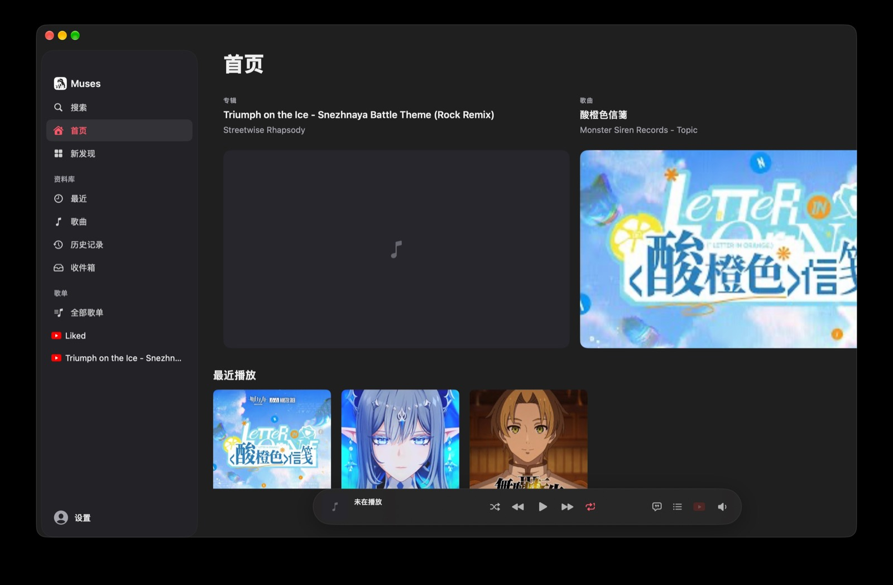
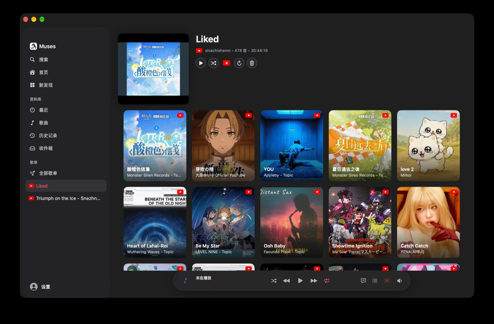
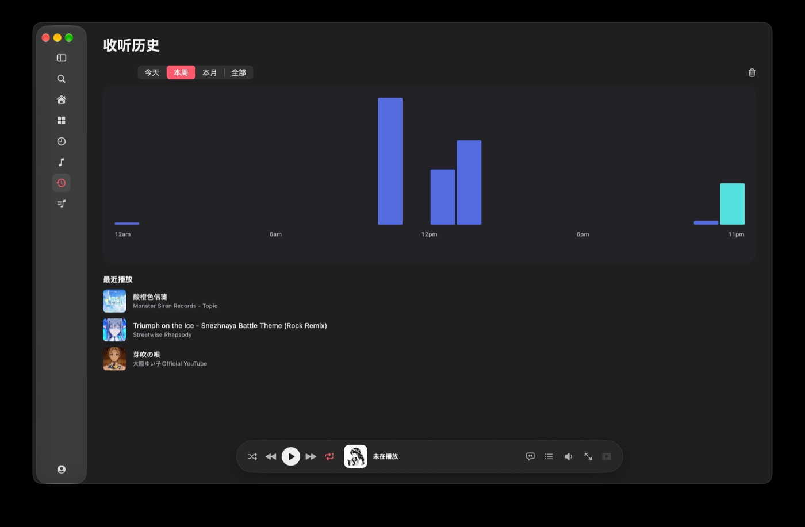
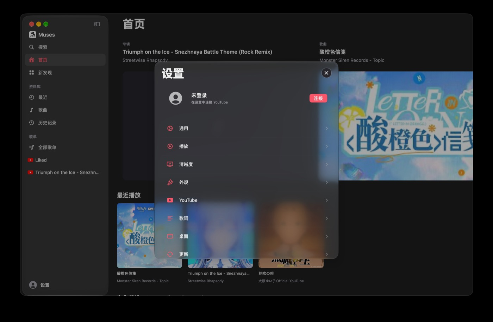

A native macOS music player for the YouTube era — a real library, a floating glass player, and an immersive Now Playing. SwiftUI + AVFoundation. Not a web wrapper.
macOS 14+ · MIT licensed · English / 简体中文

Features
Imported playlists become genuine catalog objects. Playback, browsing, and system integration behave the way a native Mac app should.
Albums and artists built from stable identifiers — never merged by display name. Likes, subscriptions, and owned playlists sync through a read-only account sign-in.
A persistent capsule carries artwork, transport, volume, lyrics, and the queue across every browsing surface.
Cover and vinyl modes with time-synced lyrics on a distraction-free canvas. Videos open as an on-demand overlay.
A centered, draggable deck that expands into the complete sortable track table — playlists keep their curated order.
Daily, weekly, and all-time charts with a playback heatmap, recent items, and full keyboard access.
System media controls, notification policy, window restoration, VoiceOver labels, and instant English/简体中文 switching.
Tour



Privacy
There is no analytics SDK, no telemetry, and no server operated for Muses. The boundaries below are enforced in code, not promised in a policy.
OAuth tokens live in the macOS Keychain; your library, history, and notes live in a local SwiftData store.
Off by default. A separate one-shot helper reads your browser session only with explicit consent, into a temporary cookie jar wiped on exit.
Cookies, auth hashes, raw payloads, and pagination tokens are never written to disk or logs — whitelisted, normalized snapshots only.
It can never influence playback, send notifications, write playlists, or act as the source of truth for your data.